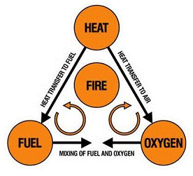

Fire safety is the set of practices intended to reduce the destruction caused by fire. Fire safety measures include those that are intended to prevent ignition of an uncontrolled fire, and those that are used to limit the development and effects of a fire after it starts. Fire safety measures include those that are intended to prevent ignition of an uncontrolled fire, and those that are used to limit the development and effects of a fire after it starts.
A fire extinguisher is a portable device used to extinguish or control small fires, often in emergency situations. It is not intended for use on an out-of-control fire, such as one which has reached the ceiling, endangers the user (i.e., no escape route, smoke, explosion hazard, etc.), or otherwise requires the expertise of a fire brigade. Fire extinguishers are used by firefighters, industrial workers, and other personnel where they may be exposed to fire hazards. They are also used in the home, and in boats and other vehicles. Fire extinguishers are rated by the class of fire that they can extinguish. The most common classes are A, B, C, D, and K. A fire extinguisher rated A:B:C is suitable for use on all three classes of fire. A fire extinguisher rated A:B:C:D is suitable for use on all four classes of fire. A fire extinguisher rated A:B:C:D:K is suitable for use on all five classes of fire. A fire extinguisher rated A:B:C:D:K:W is suitable for use on all six classes of fire. A fire extinguisher rated A:B:C:D:K:W:Y is suitable for use on all seven classes of fire. A fire extinguisher rated A:B:C:D:K:W:Y:Z is suitable for use on all eight classes of fire. A fire extinguisher rated A:B:C:D:K:W:Y:Z:Q is suitable for use on all nine classes of fire.
HSE Safety